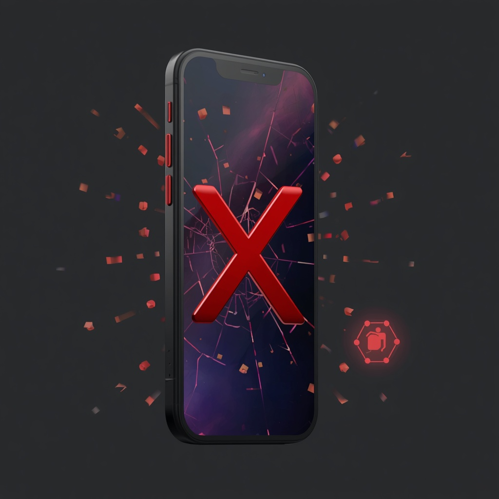

Как работать с клиентами, которые не берут трубку: три касания, правила фиксации и финальные статусы.

Не терять тёплых лидов, но не превращать НДЗ в бесконечный спам. Каждый НДЗ всегда заканчивается задачей на следующее касание или финальным статусом.
Когда: сразу после появления заявки или по задаче.
Совершаем звонок.
Если клиент не ответил:
Когда: на следующий рабочий день после первого НДЗ.
Повторный звонок.
Если клиент не ответил:
Когда: через 2–3 дня после второго НДЗ.
Третий звонок — лучше в другое время дня (если раньше был день, пробуем вечер).
Если всё ещё НДЗ:
Считаем, что связь есть. Дальше работаем через удобный для него канал (мессенджер / чат), звонки сокращаем.
Сразу переводим в отказ. Задачи и дальнейшие НДЗ по нему не ставим.